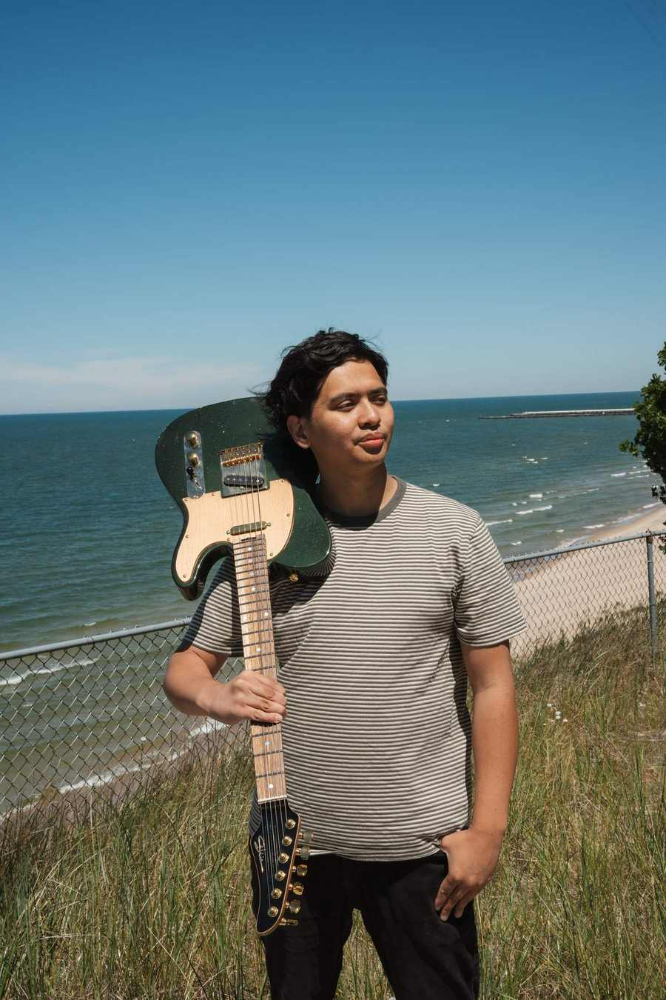

Jemmuel Magtibay
Meet Jem.
Guitarist, music producer, music director, and content creator.

About
A life in music.
Jemmuel Magtibay is a musician and producer from Sydney, Australia. Growing up in a musical community at church shaped his love of guitar and performance.
At 16, Jem landed his first paid performance in a production of Hairspray. His creative career has since included touring, recording sessions, production, music direction, and content creation.
Through every project, Jem brings an energetic, song-first approach, serving the people and the music.
Explore services →Collaborations
Music made together.
His work has included collaborations and projects with Cade Foehner, Gabby Barrett, Nigel Hendroff, CityAlight, Luke Munns, Mike Champion, and Chris Sligh.
His original website also features testimonials from artists and producers who value his musicianship, creativity, professionalism, and energy.
Let's collaborate